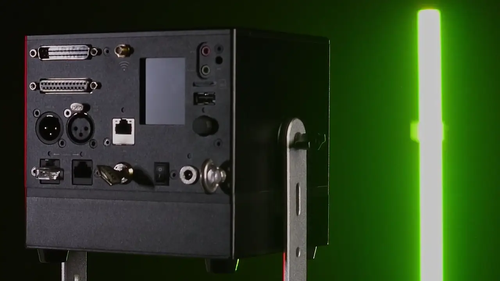
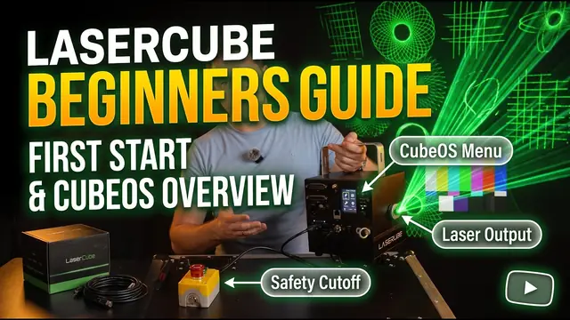
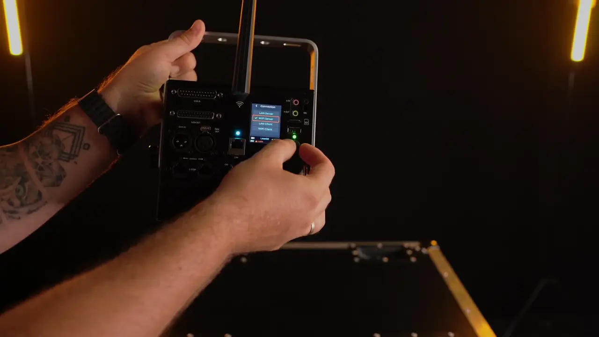
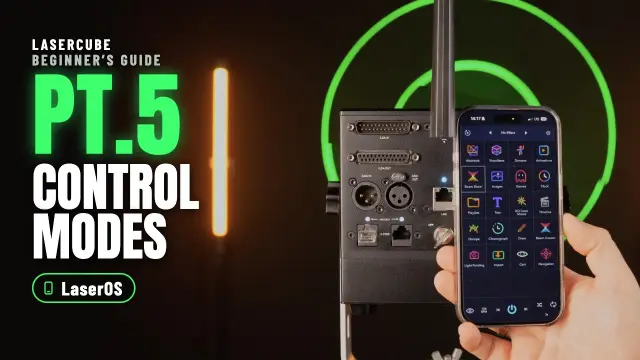
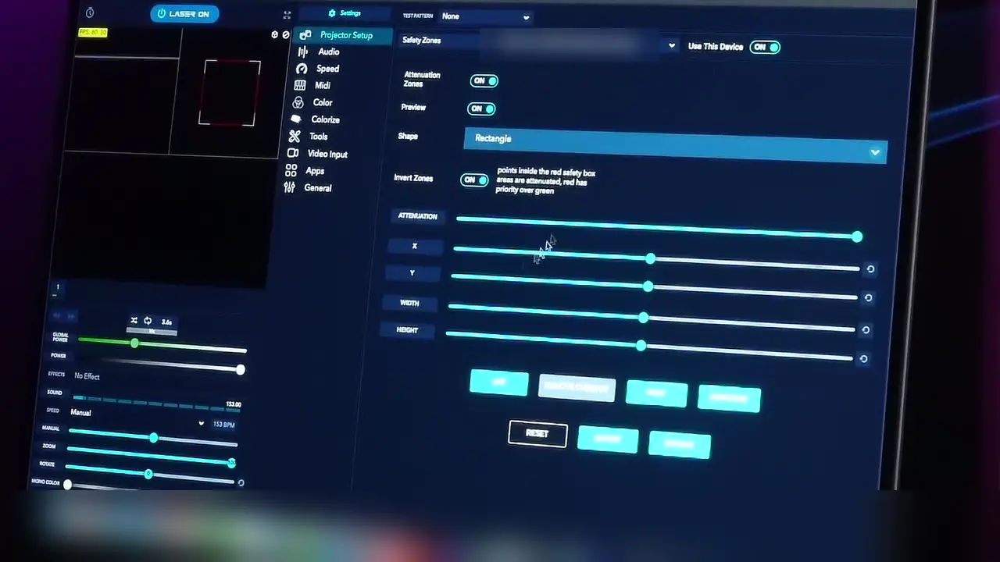

Laser radiation: avoid eye or skin exposure to direct or scattered radiation. Before using this product, read and follow all notices and safety information. Our free course Start here: from the box to your first safe show takes you through the safety rules step by step; the full text is in the manual.
Step 1 of 5
Getting to know your LaserCube
Before you switch anything on, see what came in the box and learn what the parts of your cube do. Most of them are there for safety.
The video says the rain cover helps if you perform outdoors in the rain: light rain is OK only with the cube’s own rain cover on; never run the cube in heavy rain. It also says never to point at moving cars: never aim at any vehicle, parked or moving, as the label on the cube says.
In the box
- The cube in its protective case, with its 19V charger (with a plug or cable for your country).
- An Ethernet cable, and a USB‑C to Ethernet adapter for a cable to a phone or laptop.
- Spare safety keys, and interlock jumpers: small plugs for the RJ45 interlock connectors on the back. US units come with an E‑Stop instead.
- WiFi antennas, a clamp adapter for fitting your own clamp, and a steel safety loop with a carabiner, for the safety cable through the eye bolt when the cube is mounted at height.
- A pre‑loaded micro SD card.
- The DJX, STAGE and STADIUM bundles add accessories, and outside the USA a STADIUM bundle also has an E‑Stop. The product page lists what each bundle has.
The parts to know first
- Laser aperture: the window the laser light comes out of.
- Beam block: blocks the beam and stops it from scanning into the audience. The screws on either side lock it.
- Safety key: stops the laser from being switched on by accident. After a power loss, or when the interlock is opened and closed again, the key has to be reset.
- E‑STOP (interlock) ports: two network‑style (RJ45) sockets for the safety shut‑off. The safety jumper or an E‑Stop plugs in here. Never plug network (Ethernet) devices into them.
- EMISSION LEDs: when they’re lit, the laser can emit. Never cover them.
On the back, the Ultra MK2 also has ILDA In and Out, full‑size XLR DMX In and Out, an Ethernet port, audio line in and out, a USB port, the micro SD card slot, and the CubeOS screen with its knob. The manual’s parts diagram names every one.
Go deeper: Academy: Know your LaserCube·Manual: What’s in the Box·Parts diagram·Accessories
Step 2 of 5
Turning on your device
The laser only emits when the interlock is closed and the key is on. Learn how to stop it before you ever start it.
How to stop the laser. Turn the key to OFF, or press the big red button on the E‑Stop. Pulling out the charger is not a way to stop: the Ultra MK2 and Pro keep running on their battery.
Power
- Charge through the 19V DC input. The charging LED is red while charging and green when full.
- Turn the cube on with the power switch. The LCD shows CubeOS: turn and push the rotary knob to move through the menus.
- The status bar at the bottom of the screen shows important messages and warnings.
Before the key goes to ON, set the beam block, with the cube switched off and the key out, so no beam can scan into an audience area (step 5). If the cube is in Playlist control mode, it starts the last playlist as soon as the interlock is enabled (“Power‑On Play” is on by default).
Outside the US: the safety jumper
- Plug the safety jumper into one of the two E‑STOP ports.
- Insert the safety key and turn it from OFF to ON. The EMISSION LEDs light up: the cube can now emit laser light.
- To stop emission, turn the key from ON to OFF and take it out.

The clip shows the safety jumper; a US cube starts with the E‑Stop instead (below).
With an E‑Stop (required in the US)
US cubes come without the jumper. They must run with the E‑Stop that comes with them (an FDA requirement), and the laser won’t work without it. Outside the US the E‑Stop is optional (the STADIUM bundle comes with one); if your E‑Stop has no key, skip the step with the pendant key.
- Connect the E‑Stop pendant to the cube.
- Turn the key on the cube to ON.
- If the red STOP button is pushed in, turn it clockwise until you can pull it up.
- Turn the key on the pendant clockwise to ON (if it has one). The EMISSION LEDs flash slowly, once every 3 seconds.
- After the second flash, briefly press the green START button. The LEDs flash once a second; after 10 seconds they stay on and the laser can emit.

When the cube has lost power, or after the interlock has been opened and closed again, the laser won’t start by itself. Reset the key first (turn it to OFF, then back to ON), and with an E‑Stop connected, do the E‑Stop start again.
Go deeper: Academy: Key, interlock and E‑Stop·Manual: E‑Stop / interlock·E‑Stop setup guide·Power, battery and temperature
Step 3 of 5
Connecting your LaserCube
The cube needs a network connection when something streams to it or controls it over the network: LaserOS and other show software, an Art‑Net desk, or the web apps in your browser.

Connect over the cube’s own WiFi
- Connect the WiFi antenna that comes with the cube: the manual says to do this before using any wireless mode.
- On the cube, choose Settings → Connection → WiFi Server. On firmware older than 2.1, changing the connection mode restarts the cube: select YES and push the knob. Firmware 2.1 and later switch without a restart.
- On your phone or computer, join the cube’s WiFi. By default it’s called LaserCube and the password is Laser2020. You can change both under Settings → Network → WiFi Server.
The four connection modes
- WiFi Server: the cube makes its own WiFi network, and your phone or computer joins it. The manual suggests it for one cube without cables, where WiFi isn’t congested.
- WiFi Client: the cube joins your WiFi router. How well it works depends on the router, how congested the WiFi is and how much other traffic is on the network.
- LAN Client: the cube joins your network through a network cable, to a router or a switch. The manual recommends it for several cubes, and where WiFi may be congested.
- LAN Server: a cable straight to one device, such as a laptop, or a phone with the USB‑C to Ethernet adapter that comes with the cube. The cube gives that device its network address.
Settings → Connection chooses the mode, and Settings → Network holds each mode’s own settings, such as network names, passwords and addresses. The status bar shows the connection mode, with a tick once it’s connected.
Go deeper: Academy: Connect, update and troubleshoot·Manual: Connection settings·Network settings
Step 4 of 5
Getting started with LaserOS
Get LaserOS for your Windows or Mac computer, or your iOS or Android phone. The phone apps stream to the cube; putting content on its SD card needs the computer version.

The video arms a cube with the safety jumper. In the US the cube runs with an E‑Stop instead (step 2).
Your first connection to LaserOS
- On the cube, choose Control Mode → LaserOS.
- Connect your phone or computer to the cube (step 3).
- Open LaserOS. It finds the connected cube: on a computer, the Laser button at the top left then reads LASER OFF, with a red power symbol. If it reads NO LASER, LaserOS hasn’t found the cube: close LaserOS, connect the cube, then start LaserOS again.
- Don’t start the laser yet: first set the beam block, so no beam can scan into an audience area (step 5).
- Once the beam block is set, with the interlock closed and the key on (step 2), click the Laser button: it reads LASER ON. Click it again, or press Esc, to stop. In the phone app, use the power button in the middle of the bottom bar: red when the projection is off, blue when it’s on. If the cube isn’t armed, LaserOS shows the message “Interlock is not enabled on cube”.
Go deeper: Academy: Switch on and connect LaserOS·Academy: LaserOS basics·Manual: LaserOS control mode·The Laser button·Making Content in LaserOS
Step 5 of 5
Using your LaserCube
Before any show where people may be present, set the beam block, then add a safety zone. A zone works on top of the beam block and the 3 m rule, never instead of them.
Set the beam block
The beam block is your hard stop: whatever the software does, the beam can’t get past it.
- Switch the cube off and take the key out.
- Aim the cube and lock it in place.
- Adjust the beam block, then lock it with the screws on either side.
- Switch on and project a full‑size test image at low brightness: the RGB‑THold test pattern (Settings → Projection → Test Patterns) draws a border round the projection area. Stand beside or behind the cube, never in front of it, and look where the beams go.
- Repeat until no beam can scan into any audience area, and every beam stays at least 3 m (10 ft) above people.
Add a safety zone
In the clip below, the video cuts a zone around a face drawn on a box and calls it “absolutely safe”. That is wrong: no zone, inverted or not, makes it safe to aim at people. Never aim a LaserCube at people, zone or not.

- A keep‑within zone (the default) marks where beams may go; beams outside it are reduced. Use it for the target area where beams can safely end.
- Invert it and it becomes a keep‑out zone: beams inside it are reduced. Use it to keep beams off something, such as a camera or a video projector.
- In LaserOS control mode, LaserOS handles the safety zone, so the cube greys out its own Safety Zone entry. In the cube’s own modes, such as Visualizer or Playlist, the zone set on the cube applies.
Then make it yours
- Start here: from the box to your first safe showThe full beginner course: the safety rules, planning and mounting, a checklist for every show, and a certificate.
- LaserOS basics: your logo, text and effectsFind your way around LaserOS, project your own text and logo, and play it all with playlists.
- Control modes for the Ultra MK2 and ProPlaylists, visualizers and laser shows from the cube itself, and DMX, Art‑Net and MIDI.
- TutorialsShort videos, one task each.
- The manualEvery setting, port, spec and DMX channel.
- TroubleshootingSomething not working? Symptom, cause and fix.
Stuck? Email support@laseros.com.
Go deeper: Academy: Beam block and safety zones·Manual: Safety zone on the cube·Before every show·Manual: Hardware installation·Safety zones in LaserOS